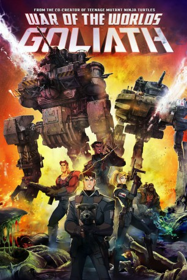

#8872 War of the Worlds: Goliath
 
 IMDB-Wertung: 5.5 / 10
IMDB-Wertung: 5.5 / 10  Metascore: 0
Metascore: 0 
1914, 15 Jahre nach der bis dato letzten Invasion durch die Marsianer, die viele der großen Städte zerstörte: Der junge Eric Wells musste mit ansehen, wie seine Eltern getötet und seine Heimat in Schutt und Asche gelegt wurde. Seitdem sorgten viele radikale Veränderungen dafür, dass die Menschheit sich aus Angst auf einen weiteren Angriff vorbereitete. Der inzwischen erwachsene Eric Wells ist nun Kapitän einer Tripod-Squad...
Jahr: 2012
Dauer: 88 Minuten
FSK: 12
Land: Malaysia Studio: EuroVideoTonspuren: DTS - ,
Untertitel:
Auflösung: 1080p (1920x1080) Größe: 3328 MB
Genre: Action, Sci-Fi, Abenteuer, Animation/Trick
Regisseur: Joe Pearson
Drehbuch: David Abramowitz
Soundtrack: Luka Kuncevic
Darsteller:
Datei: X:\HD-Anime\War of the Worlds Goliath (2012, FSK12, 1920x1080).mkv seit 04.05.2018
Festplatte: Gemischt-01+Anime
 Es gibt insgesamt 43 Filme in der Gruppe 'HD-Anime'
Es gibt insgesamt 43 Filme in der Gruppe 'HD-Anime'